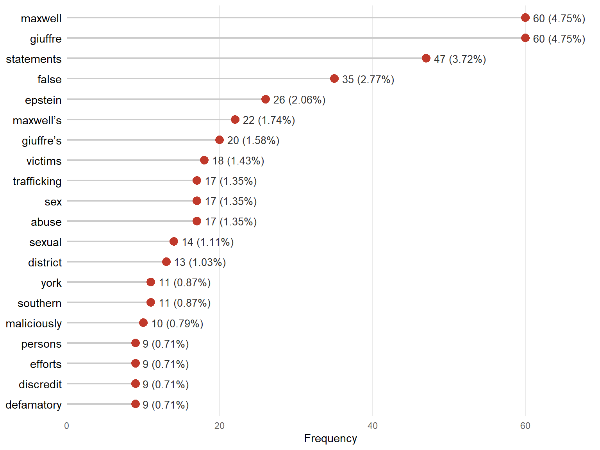
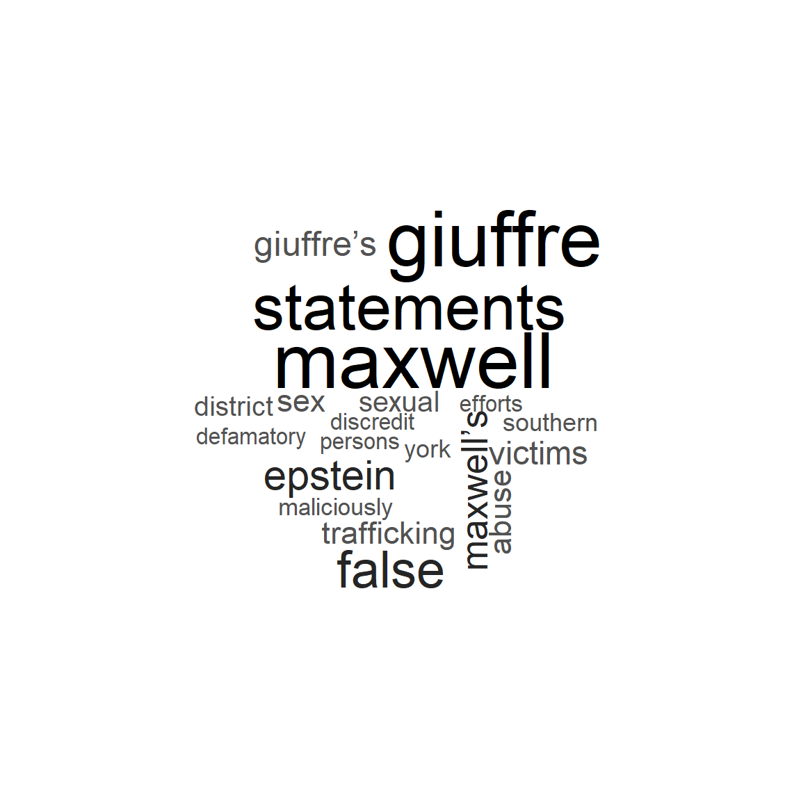
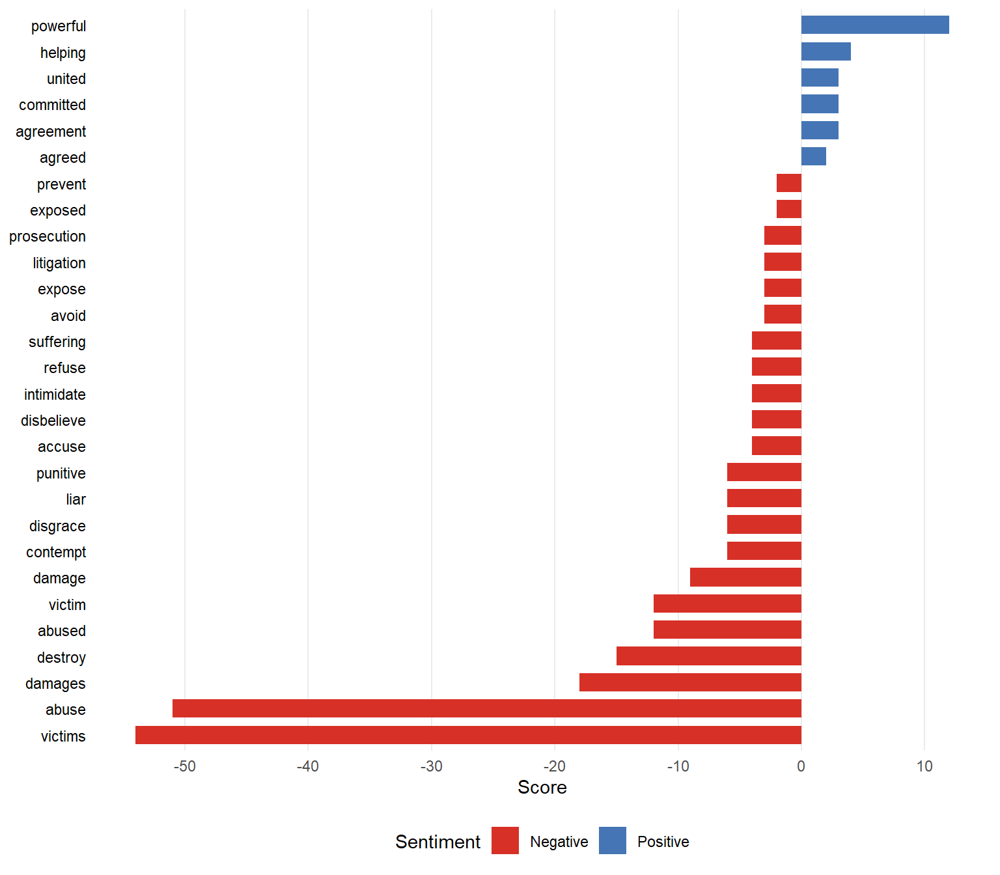
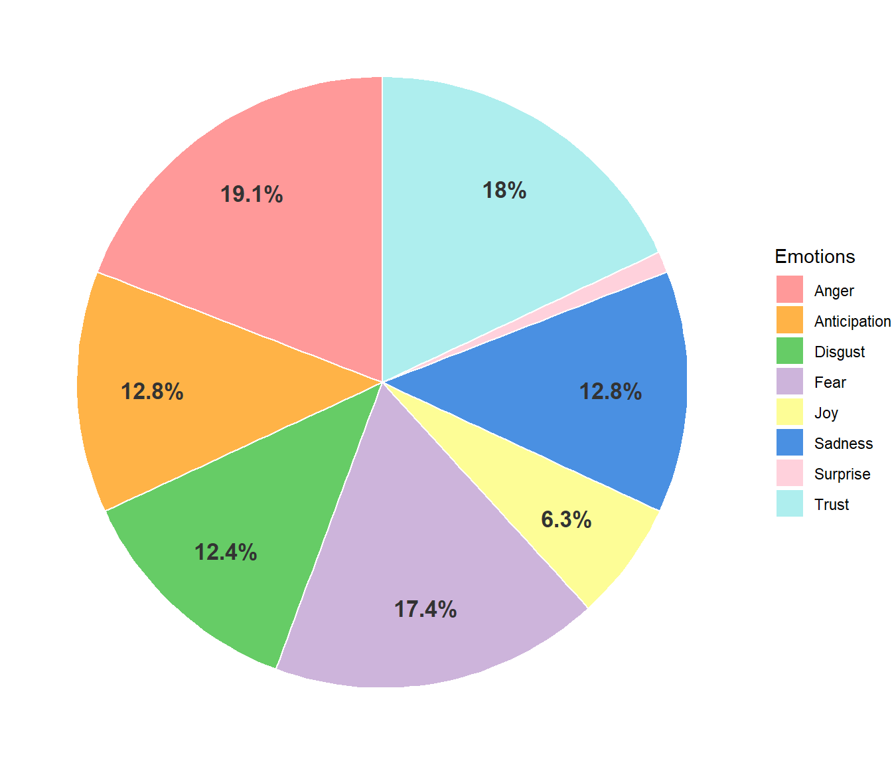
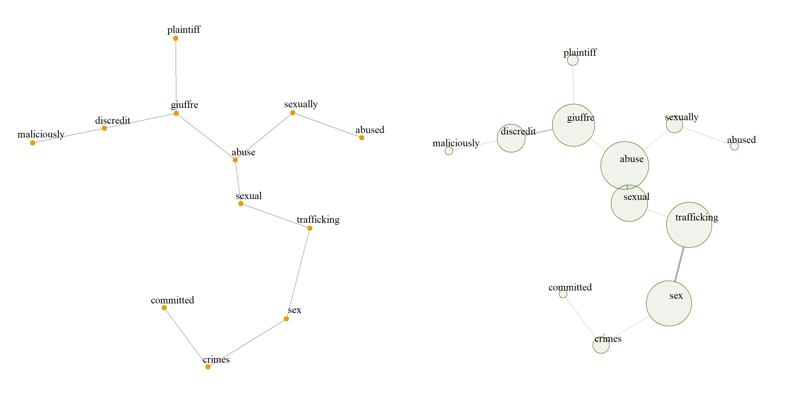
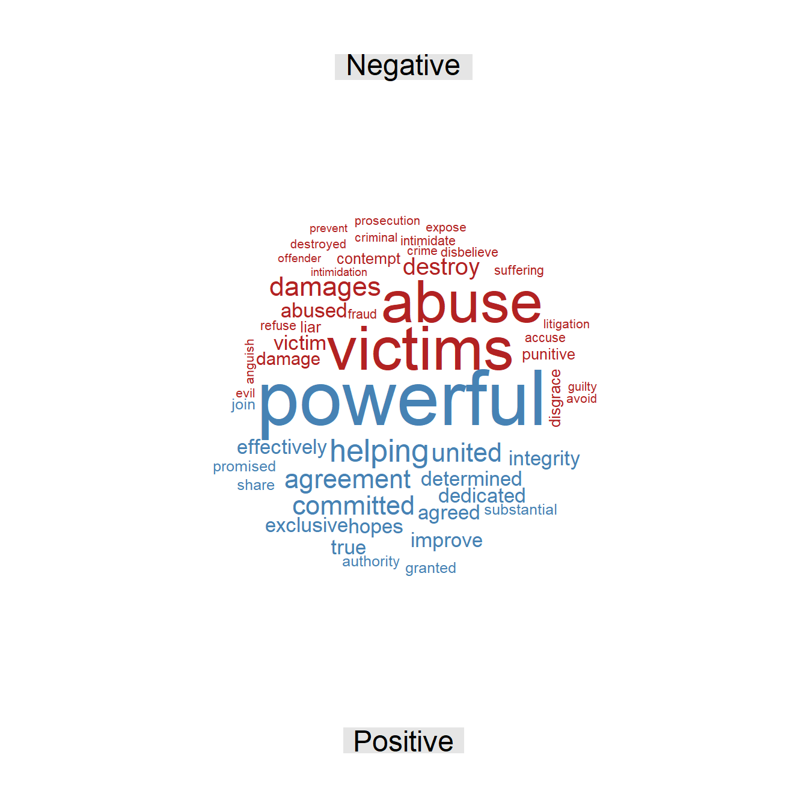
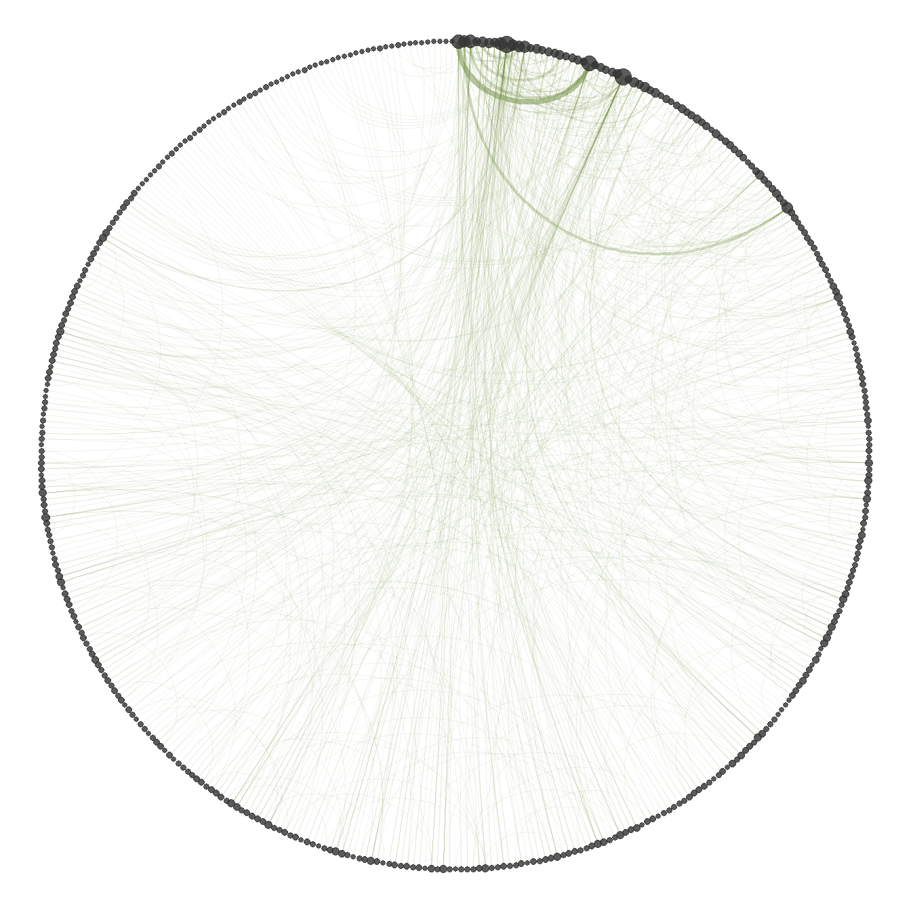
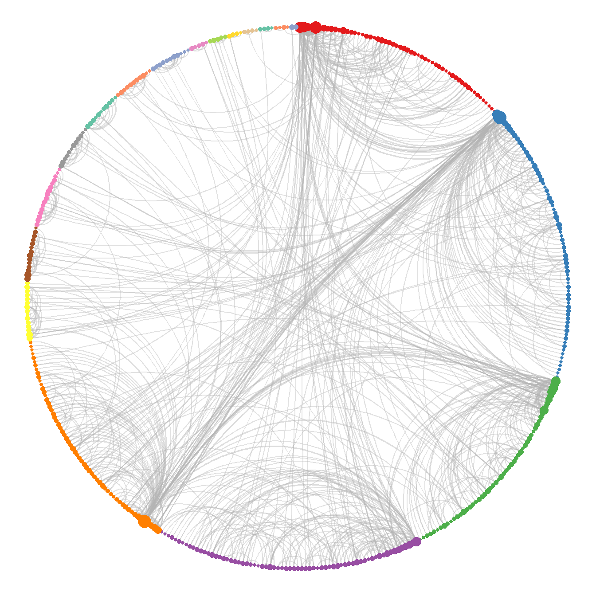

Giuffre v. Maxwell
Civil complaint filed on September 21, 2015
| Document type | Civil complaint (defamation) |
| Court | U.S. District Court for the Southern District of New York |
| Case number | 1:15-cv-07433 |
| Source | CourtListener |
| Words (cleaned text) | 2,554 |
This legal document is a defamation complaint filed by Virginia Giuffre against Ghislaine Maxwell in the U.S. District Court for the Southern District of New York. The plaintiff alleges that Maxwell not only took part in her sex trafficking when she was a minor, but later launched a malicious campaign to publicly brand her a liar. According to the complaint, these allegedly false statements sought to destroy Giuffre’s reputation and discredit her work at a non-profit organization dedicated to helping other victims. The complaint argues that Maxwell acted with deliberate malice to protect herself and Jeffrey Epstein from the consequences of their alleged crimes. On these grounds, the plaintiff seeks compensatory and punitive damages for the professional and emotional harm suffered.
Word frequency
Figure 1 shows the most frequently used words in the text. Overall, no word stands out in terms of relative frequency. However, apart from proper names, the most frequent words are “statements” and “false”, which refer to the allegedly defamatory statements attributed to Maxwell, aimed at discrediting Giuffre’s testimony and credibility. In addition, terms such as “abuse” and “sex” point directly to the offenses alleged in the complaint. Finally, the word “victims” refers not only to the alleged crimes themselves, but also to the organization for survivors founded by Giuffre, showing how the statements attributed to Maxwell affected this particular sphere.
Figure 2 confirms graphically that no word stands out disproportionately in the text. The most frequent words relate to the offenses mentioned, such as “trafficking”, “defamatory”, “discredit”, and “maliciously”. Other words do not convey information about the allegations or their context, but about the court where the complaint was filed, such as “new”, “york”, “southern”, and “district”; since every complaint must identify the court, these words appear frequently.

The analysis shows that most of the frequent words relate to the offenses alleged in the complaint. Although none of them has a high relative frequency, this is clearly one of the main axes of the text. Both the plaintiff and the defendant are mentioned recurrently, but another proper name that stands out among the most frequent words is Epstein, which shows that he is a highly relevant figure in this case.
Sentiment analysis
Figure 3 shows that two words have a very high score: “abuse” and “victims”, since they combine a high frequency with a strongly negative value. These words dominate the negative sentiment and also the overall sentiment of the text, as the magnitude of their scores is far larger than that of the positive words. Other words with a moderate negative charge include “damages”, “destroy”, “abused”, “victim”, and “disgrace”, among others, showing that the negative sentiment is characterized by words denoting some form of harm.

The prevailing positive words in the text are “powerful”, “helping”, “united”, “committed”, and “agreement”. However, their emotional charge is much lower than that of the negative words. Moreover, in this particular context, these terms are not necessarily used with a positive connotation. For example, “powerful” may refer to the economic and social power attributed to Maxwell and Epstein and how, according to the complaint, they used it to discredit Giuffre; likewise, “helping” may allude to the way in which, according to the complaint, Epstein and Maxwell facilitated the abuse, and “united” most likely comes from “United States”, the name of the court. It is therefore clear that the positive sentiment does not genuinely prevail in the text.

Figure 4 shows the percentage of words associated with each emotion in the text. The predominant emotion is anger, with 19%, which directly reflects the context of the case, a complaint for defamation and abuse. The same conflictive nature of the facts explains why other emotions such as disgust, fear, and sadness remain important, each above 12%, and why surprise and joy show the lowest levels. The high percentage of trust (18%), in turn, is due to the nature of the document, which constantly uses terminology referring to legal entities, institutional procedures, and the expectation of legal action to redress the harm.
In conclusion, the overall sentiment of the text is negative, dominated by words related to the alleged offenses, the harm caused to the victim, and defamation. The high scores and frequencies of these terms not only reflect the seriousness of the issues addressed, but also reveal the nature of the allegations in the text. The positive sentiment, by contrast, is very weak, almost nonexistent compared with the negative one, and the words that express it do not necessarily have a positive connotation in this context; on the contrary, some of them carry a negative one.
Word relationships
The bigram network was built from the bigrams with a frequency of at least 3, in order to obtain an informative network rather than a noisy one, thus keeping the most relevant information in the text. The analysis uses the largest connected component of the graph, since it concentrates the most relevant information.

Figure 5 shows that the most frequently used words in the connected component are those related to offenses, such as “sexual abuse”, “sex trafficking”, “sex crimes”, and “maliciously discredit”, and that a vertex for “Giuffre” connects to all of them, since she is the alleged victim of these offenses. The vertices with the highest strength are those referring to sexual offenses and to the plaintiff, indicating that this is the central axis of the complaint and of its most important topics.
In this case, the bigram network makes the nature of the offenses allegedly suffered by the plaintiff much clearer; it also shows which of these offenses are most relevant in the text and how they relate to Giuffre. Although the plaintiff appears in the network, there is no vertex referring to the defendant, Maxwell, or to Epstein. Nevertheless, since Maxwell is the defendant, these acts are attributed to her in the complaint.
The skipgram network is built with all pairs, regardless of their frequency, which makes it possible to find semantic relationships that are not perceptible at first sight. The largest connected component is also used, since it contains the most important information and allows the computation of statistics that are not defined on a disconnected graph, such as the mean distance between vertices.
| Word 1 | Word 2 | Freq. | Rel. freq. |
|---|---|---|---|
| False | Statements | 25 | 2.22% |
| Sex | Trafficking | 13 | 1.15% |
| Maxwell’s | Statements | 12 | 1.06% |
| Southern | District | 11 | 0.98% |
| Sexual | Abuse | 10 | 0.89% |
| Maxwell’s | False | 9 | 0.80% |
| Defamatory | Statements | 7 | 0.62% |
| Discredit | Giuffre | 7 | 0.62% |
| Epstein | Maxwell | 6 | 0.53% |
| Maxwell | Epstein | 6 | 0.53% |
Table 1 shows that no skipgram stands out disproportionately in terms of relative frequency; that is, none of these word patterns is excessively repeated. The most frequent skipgrams relate to the alleged offenses, indicating who is presented as the victim and who is alleged to be responsible, such as “discredit Giuffre” and “Maxwell’s false”. Finally, the last rows show a direct relationship between Epstein and Maxwell. This indicates that the recurrent themes of the text are the alleged offenses and the actors involved in them.
| Statistic | Value |
|---|---|
| Mean distance | 4.54 |
| Mean degree | 3.77 |
| SD of degree | 6.14 |
| Clique number | 5.00 |
| Density | 0.01 |
| Transitivity | 0.09 |
| Assortativity | -0.13 |
| Word | Centrality |
|---|---|
| Statements | 1.00 |
| False | 0.93 |
| Maxwell’s | 0.62 |
| Defamatory | 0.31 |
| Maxwell | 0.24 |
| Directly | 0.16 |
| Giuffre | 0.16 |
| Intended | 0.14 |
| Constitute | 0.14 |
| Epstein | 0.11 |
Table 2 shows that the mean distance of the network is 4.54; that is, on average, slightly more than four steps are needed to go from one word to another. Being a relatively low value, it suggests a centralized narrative in which the different concepts and actors are quickly interconnected throughout the document. This interconnection is supported by the mean degree of 3.77, meaning that each word is directly connected to almost four different terms on average. However, the standard deviation of the degree is high (6.14) compared with its mean, which reveals great variability: a few words are connected to many others, while most have very few connections. In other words, there are hub words that appear next to many different terms, which points to very marked themes in the text.
Regarding the grouping of words, the clique number is 5, meaning that the largest group of words that are all connected to each other has 5 terms; such a structure usually reflects a frequently repeated central argument or words that always appear together. At the global level, however, the density of the network is 0.01, meaning that only 1% of all possible connections are present; the network is therefore very sparse, as is usual in word networks with a large and varied vocabulary. Consistently with this sparsity, the transitivity is 0.09, so there is only a 9% probability that two words connected to the same term are also connected to each other (forming triangles), which reflects a structure with low cohesion. Finally, the degree assortativity is negative (-0.13), indicating a mild tendency of highly connected words to link with words that have few connections, rather than with other central words.
Table 3 shows the most important words in the document, ranked by eigenvector centrality. The term “statements” is the most relevant in the network, possibly because it is used in several key contexts, referring both to the plaintiff’s testimony and to the statements at issue in the complaint. The second most important word is “false”, which accompanies central concepts of the case in a wide variety of contexts and therefore reaches an importance close to 1. Overall, the most important vertices involve the main actors, Epstein, Maxwell, and Giuffre, which shows that the topics of the case revolve directly around these people.
| Cluster | Size | Word | Strength |
|---|---|---|---|
| 1 | 56 | Statements | 90 |
| False | 68 | ||
| Maxwell’s | 57 | ||
| 2 | 72 | Maxwell | 110 |
| Epstein | 46 | ||
| Intended | 14 | ||
| 3 | 55 | Sex | 41 |
| Victims | 37 | ||
| Trafficking | 34 | ||
| 4 | 68 | Giuffre’s | 40 |
| Public | 20 | ||
| Reputation | 16 | ||
| 5 | 60 | Giuffre | 109 |
| Maliciously | 21 | ||
| Discredit | 18 |
Table 4 presents the words with the highest strength in the five largest clusters obtained with the fast greedy algorithm. This grouping identifies the central thematic axes of the document and the key terms that characterize them. The first cluster is dominated by a theme related to the false statements attributed to Maxwell. The second links Maxwell and Epstein directly, together with the word “intended”, which relates to the deliberate intent alleged in the complaint. The third cluster focuses on the victims and the nature of the offenses allegedly committed against them. Finally, clusters four and five share a related theme, focused on Giuffre’s public reputation and the way in which, according to the complaint, it was maliciously discredited.
Additional figures


